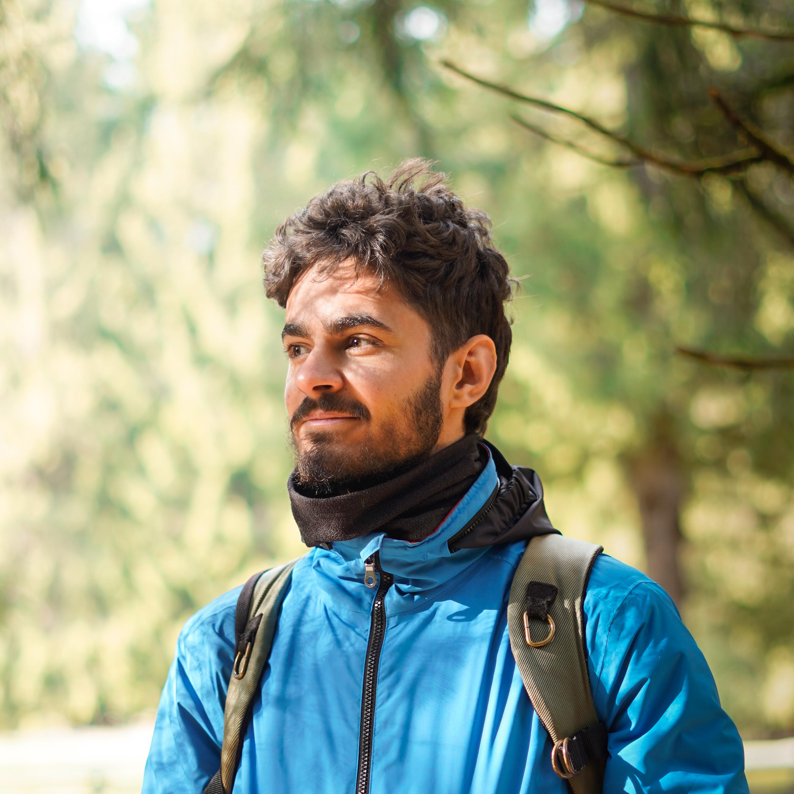

Giacomo
Bozzato
Bozzato
 Send an email
Send an email Giacomo Bozzato
Giacomo Bozzato @giacomobozzato
@giacomobozzatoHi! 👋 I'm a communication designer with a strong drive for strategy, entrepreneurship, and research. Interested in posthumanism, sustainability, and digital media. I do photography and filmmaking, art direction
and branding, user experience and interfaces.
and branding, user experience and interfaces.
Some of my photos
photography
I'm a serial observer, taking photos for fun (and sometimes for job) since I was about 16. I always bring my camera with me and look around with endless curiosity. Whatever the subject, I try to capture a moment, a memory, a feeling or just a color, a shape. Then, postproduction is part of the process. Here are some of my favourite shots I made in the last few years.